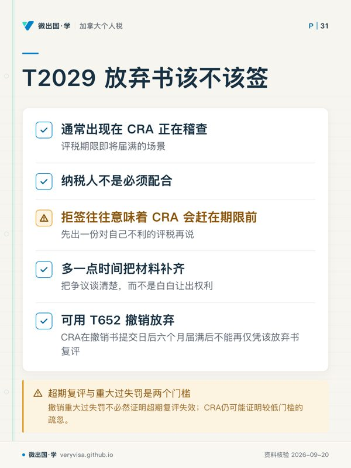
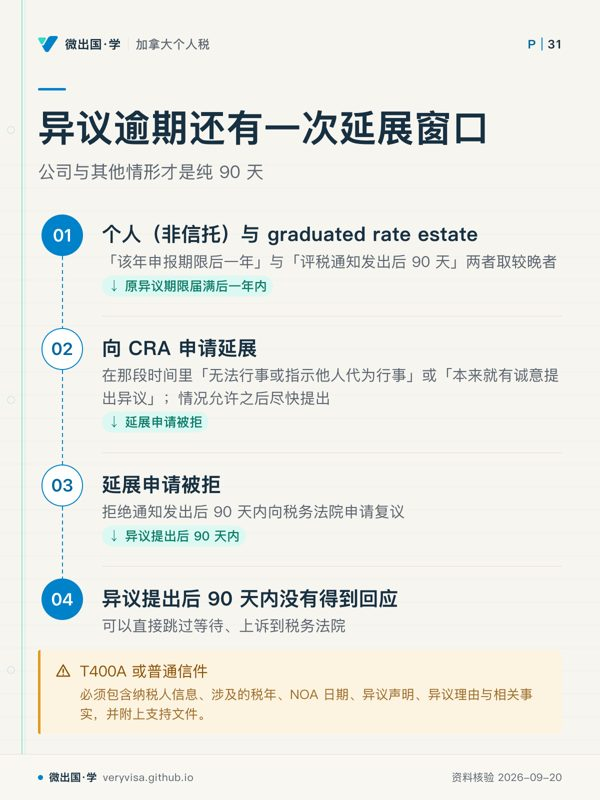
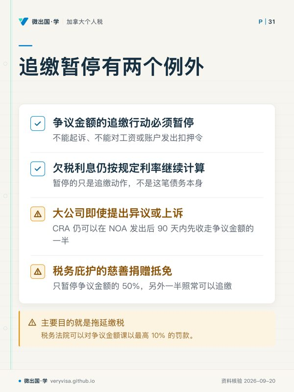

🃏 Flashcards · 3 闪卡 · 3 张 🖼 Slides · 4 幻灯 · 4 页 ✍️ Questions · 8 刷题 · 8 道
程序：评税、异议与上诉 Procedure P3 过一遍 P3 Skim
ZH EN ZH + EN
先看这一章怎么考 First, how this chapter is tested
个人异议期限取较晚者计算题：考查《所得税法》第 165(1)(a) 条的法定公式，测试个人与 graduated rate estate 适用「申报截止日后一年」与「NOA 发出后 90 天」取较晚者的特殊规则，辨析企业纯 90 天与个人的区别。 Computing the individual's objection deadline as the later of two dates: tests the statutory formula in section 165(1)(a) of the Income Tax Act. The special rule for individuals and a graduated rate estate is the later of "one year after the filing due date" and "90 days after the NOA is mailed", which distinguishes the plain 90 days for corporations from that for individuals. 正常复评期起算与法定例外判定题：考查个人与 CCPC 的 3 年正常复评期以原始 NOA 发出日为起算点，测试疏忽、粗心、故意隐瞒或欺诈导致无限期复评的法定条件，以及漏报 T1135 且漏报境外收入延长 3 年（合计 6 年）的组合要件。 Start of the normal reassessment period and the statutory exceptions: tests that the 3-year normal reassessment period for an individual and a CCPC starts from the date the original NOA is issued, the statutory conditions of neglect, carelessness, wilful default or fraud that lead to an unlimited reassessment, and the combined elements (failing to file the T1135 and also failing to report foreign income) that add 3 years for a total of 6. CRA 核对审查信类型与稽查边界辨析题：考查 Pre-assessment Review（NOA 前）、Processing Review（NOA 后）与 Matching Program（第三方匹配）的时点与对象差异，测试核对审查与全面稽查在程序性质、材料准备与应对策略上的核心界限。 Types of CRA review letters and the limits of an audit: tests the differences in timing and subject among the Pre-assessment Review (before the NOA), the Processing Review (after the NOA) and the Matching Program (third-party matching), and the core line between a review and a full audit in procedural nature, preparation of materials and response strategy. 最常丢分的陷阱（看到题干信号就警觉） Traps that cost the most marks (watch for the signal in the stem)
机械套用90天异议期限 Mechanically applying the 90-day objection deadline 题干给出个人（非公司）纳税人的申报截止日（4月30日或6月15日）与评税通知发信日期，询问提交异议通知书（Notice of Objection）的法定期限。 The question gives an individual (not a corporation) taxpayer's filing due date (April 30 or June 15) and the mailing date of the notice of assessment, and asks for the statutory deadline to file a Notice of Objection. 把正常复评期当无条件保护伞 Treating the normal reassessment period as an unconditional umbrella 题干提及距离评税已过 3 年，但纳税人在申报时存在粗心疏漏、未申报事实或同时漏报 T1135 与境外收入，询问 CRA 是否仍有权重新评税。 The question mentions that 3 years have passed since the assessment, but that the taxpayer was careless or omitted facts in the filing, or failed both to file a T1135 and to report the foreign income, and asks whether CRA can still reassess. 混淆核对审查与全面稽查 Confusing a review with a full audit 题干出现 Pre-assessment Review、Processing Review 或 Matching Program，询问纳税人所面临程序的法律性质与第一步应对措施。 The question has a Pre-assessment Review, a Processing Review or a Matching Program, and asks about the legal nature of the procedure the taxpayer faces and the first response. 本章考点页：导图、要点表、7 道带逐项解析的练习 →
核实日期：2026-10-30｜现行口径：2026 税年（2027 年春申报）｜自愿披露计划（VDP）2025-10-01 起换了新规，引用时以 CRA 现行页为准
法条依据一律指向《所得税法》(Income Tax Act, ITA) 现行合订本（Act current to 2026-06-21）；数值一律指向加拿大税务局 (Canada Revenue Agency, CRA) 现行页面。
一份评税通知（NOA）寄到手上，很多人第一反应是「这上面的数字对不对」，却不知道这张纸背后其实站着一整套救济制度：什么时候算「被重新评税」、什么时候还能申请改一份旧报表、真不服气该往哪里走、走错了会不会来不及。下面把这条链从头到尾走一遍：看懂一份 NOA/NOR 到底在告诉你什么；分清 CRA 寄来的审查信是哪一种、该怎么回；在异议、上诉、纳税人减免、自愿披露这几条并行的救济路径里，认出自己该走哪一条。以下涉及现行数字的地方均以 2026 税年 为口径。
补件过程中更换代理，先把交接单独做好 本节回答 This section answers 代理交接时权限与补件期限管理 Manage authorization and document deadlines when a representative is handed over
正在回复 CRA 的资料要求时，如需更换报税代理，可先阅读资料、账户权限与回复期限怎样交接 。这篇论坛说明把授权与材料移交分开整理，并附官方核验来源；异议与上诉规则继续按本页对应阶段阅读。
节末检索小测 · 先别往回翻，凭记忆作答 Quick recall check: answer from memory before scrolling back
Fiona is an individual taxpayer who received a Processing Review inquiry letter from the CRA requesting supporting receipts for her childcare expenses within a 30-day response window. Halfway through this 30-day period, Fiona decides to terminate her relationship with her current tax preparer and retain a new designated representative. How should Fiona and her new representative manage this transition to ensure her claimed deductions are not summarily disallowed?
Fiona 是一名个人纳税人，收到了 CRA 发出的处理后审查（Processing Review）问询信，要求在 30 天答复窗口内补交托儿费用收据。在 30 天期限过半时，Fiona 决定与原报税代理终止合作并委托新的指定代理人。Fiona 和新代理人应如何处理该交接，以确保申报的扣除项目不被直接拒绝？
a Fiona should rely on an automatic 90-day statutory extension of all response deadlines that takes effect immediately upon notifying CRA of a representative change. ✗ 错误。更换报税代理不会自动触发任何法定期限延期，CRA 的补件截止日期依然有效，必须主动申请延期或按期递交。 Incorrect. Changing the tax preparer does not trigger any statutory extension automatically, and CRA's deadline to supply documents remains in effect, so the taxpayer must apply for an extension or supply the documents on time.
b Handle account authorization and file transfer separately, update CRA access quickly, and watch or extend the 30-day deadline. ✓ 正确。根据讲义引言指导原则，补件过程中更换代理必须将账户授权（Represent a Client 权限）与档案资料移交分开处理，迅速完成官方权限交接并严格跟踪原本给定的回复截止日；如需更多时间，应主动向 CRA 申请延期，避免因交接真空导致材料逾期而被直接下达不利重评。 Correct. Under the guiding principle in the introduction to the lecture, when the representative is changed during a document request, the account authorization (the Represent a Client authorization) must be handled separately from the transfer of the file. The official handover of access should be completed quickly and the original response deadline strictly tracked. If more time is needed, the taxpayer should proactively ask CRA for an extension, so that a gap in the handover does not make the materials late and lead to an adverse reassessment.
c Fiona must cancel her existing representative authorization and defer granting new authorization until CRA issues a formal arbitrary assessment. ✗ 错误。故意拖延授权并等待武断评税（arbitrary assessment）会导致扣除额被全额剔除并可能引发滞纳罚息，绝非合规救济手段。 Incorrect. Deliberately delaying the authorization and waiting for an arbitrary assessment causes deductions to be removed in full and may lead to late penalties and interest. It is not a compliant remedy.
d The new representative is legally prohibited from contacting CRA until the former representative executes a court-certified release form. ✗ 错误。税法和 CRA 代理人管理系统均无须原代理签署法院认证解约书的强制规定，纳税人可单方撤销并重新授权。 Incorrect. Neither the tax law nor CRA's representative system requires a court-certified termination letter signed by the former representative, and the taxpayer can unilaterally revoke and re-authorize.
看答案与每个选项的解析 Show the answer and why each option is right or wrong 答案 Answer ：b
一、制度设计与底层逻辑：为什么评税之后还有这么多层 本节回答 This section answers 评税行政性质与两层救济底层逻辑 Understand the administrative nature of an assessment and the logic of two layers of relief 本章考题 2 Question 2
1.1 「评税」本身不是终点，是一个可以被反复打开的动作
ITA s.152(2) 只说了一句话：CRA 审查完报表要发一份 NOA。但 s.152(3) 紧接着补了一句常被忽略的话——税务责任不取决于评税是否正确，也不取决于有没有做过评税 。换句话说，NOA 上的数字从来不是「官方认证的真相」，只是 CRA 当时按你提供的信息算出的一个结果；它可以被 CRA 主动改（重新评税），也可以被你申请改（异议、T1-ADJ），本质上评税是一个可以反复打开的行政动作 ，不是一锤定音的判决。这一点决定了后面所有救济路径的逻辑：既然评税可以被打开，制度就必须回答两个问题——谁有权打开、什么时候必须停止打开 。
1.2 谁与谁在博弈：纳税人要确定性，CRA 要留一道后门
纳税人天然希望「报完税、过了一段时间就彻底翻篇」——这份心理需求由正常复评期 满足：个人与加拿大控制的私人公司 (CCPC) 的正常复评期是 3 年 ，从原始 NOA 或「无需纳税」通知发出日起算（非 CCPC 公司与共同基金信托是 4 年）（加拿大联邦法规库 ）。但 CRA 同样不愿意被一个"如实申报"的假设锁死——如果纳税人的申报本身就存在造假或重大过失，继续保护这份"确定性"等于奖励说谎。制度的解法是把这份保护做成一份有条件的合同 ：老实申报换 3 年的安宁；一旦被证明存在"可归因于疏忽、粗心或故意隐瞒的失实陈述"或欺诈，CRA 可以无限期 往回复评，没有年数上限（ITA s.152(4)(a)(i)，加拿大联邦法规库 ）。这正是本页第一条也是最重要的一条纪律："正常复评期 3 年"从来不是无条件的，它的另一面是一条没有上限的例外。
1.3 异议为什行政内部先走一轮，而不是直接打官司
从异议到税务法院，是一条刻意设计的分层救济 ：先在 CRA 内部走一轮免费、相对非正式的异议 (objection)——由上诉处 (Appeals Branch) 里没有参与过原评税的官员重新审查；只有对上诉处的决定仍不服，才升级到独立于 CRA 之外的税务法院 (Tax Court of Canada)。这样设计的理由很直白：大部分争议其实是信息没交全或者一次沟通误会（例如学费抵免因「不在校学习」被拒，补一份学校出具的说明，问题往往当场解决），把这类争议都塞进法院系统只会堆积案件、拖慢真正需要司法裁决的疑难案子。税务法院本身又分两条轨道 ——非正式程序（无需律师、无需遵守严格证据规则、免申请费）与一般程序（正式诉讼程序），门槛是争议金额是否超过 $25,000（或争议亏损 $50,000） （Tax Court of Canada Act s.18，加拿大联邦法规库（论坛解读） ）。这条门槛值从 2024 到 2026 三年没有变过，且不随通胀指数化 ——制度故意把「小额、简单」的争议筛出来走便宜通道，省下法院资源处理真正复杂的案子。
ℹ️
权利失效、罚款利息、福利暂停：三种后果性质完全不同
错过异议或上诉期限，纳税人失去的不是「多付一点钱」的问题，而是彻底丧失对这一年评税结果说「不」的正式渠道 ，事后只能寄望于纳税人减免这类酌情条款去补救罚款与利息（本身也补救不了税额争议）。利息与罚款理论上随时可以通过合规或减免申请去修正，唯独程序期限一旦真正过期，正式渠道就关上了 ——这是本页反复强调「先看日期、再看金额」的原因。
节末检索小测 · 先别往回翻，凭记忆作答 Quick recall check: answer from memory before scrolling back
Under subsection 152(3) of the Income Tax Act, a taxpayer's statutory tax liability does not depend on whether an assessment was correct or whether an assessment was made at all. Why did Parliament design an internal administrative dispute resolution mechanism (the Notice of Objection to the CRA Appeals Branch) before permitting direct appeals to the Tax Court of Canada?
根据《所得税法》第 152(3) 条，纳税人的法定义务不取决于评税是否正确或有无做过评税。国会为何在允许向加拿大税务法院提起正式上诉之前，刻意设计了行政内部争议解决机制（向上诉处提出异议）？
a To settle routine factual or missing-document disputes in a free internal review, saving the court for real legal disputes. ✓ 正确。根据讲义第 1.3 节，分层救济的制度初衷在于大部分税务争议属于信息不全或沟通误会（如补交凭证即可解决）。通过 CRA 内部独立且免费的异议（objection）程序将简单事实性纠纷先行过滤，既保障了评税作为行政动作可反复修正的弹性，又防止司法资源被微小琐事挤占。 Correct. Under section 1.3 of the lecture, the purpose of the tiered system of relief is that most tax disputes arise from incomplete information or communication misunderstandings (for example, they are resolved by supplying a receipt). Filtering simple factual disputes first through CRA's independent and free internal objection process protects the flexibility of an assessment as an administrative act that can be corrected repeatedly, and keeps judicial resources from being taken up by small matters.
b To ensure that every Notice of Assessment functions as a binding judicial decree that can only be altered with written permission from the Federal Court. ✗ 错误。ITA s.152(3) 明确说明评税不是不可更改的终局判决，而是一个可以被纳税人或 CRA 反复打开的行政动作。 Incorrect. ITA s.152(3) expressly states that an assessment is not a final, unchangeable judgment but an administrative act that the taxpayer or CRA can reopen repeatedly.
c To collect a mandatory 25% administrative dispute surcharge from the taxpayer prior to granting access to an independent federal judge. ✗ 错误。向 CRA 提出异议是完全免费的行政复核程序，税法并未设立任何 25% 的争议附加费。 Incorrect. Filing an objection with CRA is a completely free administrative review, and the law sets no 25% administrative dispute surcharge.
d To permanently extinguish the taxpayer's constitutional right to judicial review whenever the Appeals Branch fails to render a decision within 60 days. ✗ 错误。若异议提出后 90 天内 CRA 未予回应，纳税人依法有权直接跳过等待、将案件起诉至税务法院，诉权并未灭失。 Incorrect. If CRA does not respond within 90 days after an objection is filed, the taxpayer has a statutory right to skip the wait and sue in the Tax Court, so the right to sue is not extinguished.
看答案与每个选项的解析 Show the answer and why each option is right or wrong 答案 Answer ：a
二、2026 税年现行规则与数字 本节回答 This section answers 境外资产双缺失延长复评期规则 Know the extended reassessment period rule when both the T1135 and the income are missing 本章考题 1 Question 1 本章考题 4 Question 4
2.1 NOA/NORA 怎么读：三段信息，缺一不可
一份评税通知（Notice of Assessment, NOA）或重新评税通知（Notice of Reassessment, NOR）在结构上分三段，读的时候不能只看第一段：
结果段 ——退税或欠税的最终数字，以及这个数字是怎么从你申报的收入、扣除、抵免一路算出来的摘要。解释段 ——如果 CRA 对你申报的内容做了任何改动（拒绝了某项扣除、调整了某笔收入），这一段会写明改了什么、为什么改；这段文字往往比第一段的数字更重要，因为它是你判断「要不要异议」的唯一依据。账户余额段 ——NOA 上的 RRSP 扣除限额与亏损结转余额可作核对起点；TFSA 可用额度要结合各家机构的供款与提取记录自己核算，CRA 的记录可能滞后，NOA 上的数不是实时准数（canada.ca（论坛解读） ）。
电子申报走 Express NOA 服务的，评税结果几乎即时可见；一般电子申报的服务标准是 2 周内 出具 NOA（目标达标率 95%），纸质申报是 12 周内 ——但这是 CRA 对自己设的服务标准 ，不是《所得税法》里的法定义务，遇到逝者、破产、跨境、非居民或多年合并申报等情形不适用（CRA（论坛解读） ）。CRA 发送 NOA/NOR 的默认渠道是账户里的「网上邮件」，只有纳税人自己把偏好改成信件邮寄、或者 CRA 从未拿到过其电子邮箱地址，才会退回纸质信件（CRA ）——这个默认值早已从「纸质信件」倒转成「网上账户」 ，判断「我会不会漏看一份通知」，第一件事是查账户里的通讯设置，而不是凭旧印象假设。
应纳税为零的评税，不会自动变成「亏损裁定」。CRA 认定的亏损金额与你申报的不同时，可以按 ITA s.152(1.1) 请 CRA 出具正式的亏损裁定通知（loss determination），这份裁定可以异议；零税年份照样会收到 NOA（加拿大联邦法规库 ）。
2.2 正常复评期 3 年与三条例外：一张表说清「CRA 还能不能回头查你」
图：复评期限——正常期限与法定例外
超期复评与重大过失罚是两道不同的门槛。s.152(4)(a)(i) 覆盖可归因于疏忽、粗心或故意失责的失实陈述，以及欺诈；s.163(2) 的重大过失罚则要求明知或相当于重大过失的行为。所以重大过失罚被撤销，不等于超期复评跟着失效——CRA 仍可能证明门槛更低的「疏忽」。超期复评能改的事项范围，还受 s.152(4.01) 限制，只限与失实陈述相关的部分（加拿大联邦法规库（1 、2（论坛解读） ））。
⚠️
「过了三年就绝对安全」只对老实报税的人成立
很多人把「正常复评期 3 年」记成一条无条件的保护伞，却不知道它默认的前提是「这份报表本身没问题」。判断自己是不是真的过了安全期，先问「我这份报表当年有没有可归因于疏忽、粗心或故意隐瞒的失实陈述」「有没有 T1135 与对应境外收入同时漏报」，再谈年数。
T2029 放弃书 通常出现在 CRA 正在稽查、评税期限即将届满的场景：CRA 会请纳税人签这份放弃书，纳税人不是必须配合，但拒签往往意味着 CRA 会赶在期限前先出一份对自己不利的评税再说——签放弃书换来的是多一点时间把材料补齐、把争议谈清楚 ，而不是白白让出权利。
2.3 CRA 审查信：先分清是哪一种，再决定怎么回
CRA 用来核对报表的项目一共有八个，本课读者最常撞到的是前三个，且判断的关键是时点 与比对对象 ：
（CRA ）以上三者都不是稽查 (audit) ——审查关心的是「某一格数字有没有支持文件」，稽查关心的是整份报表乃至多年账目的整体核实。收到审查信的第一步是看信封或信头上写的项目名称，通常会附一个网址与「claim code」，把这串代码输进去就能查到 CRA 具体要哪一份文件；一般会给 30 天左右的窗口提交材料，逾期不回复，CRA 会直接按现有信息拒绝相关扣除或抵免并出具（重新）评税，事后仍可以通过异议或补交材料的方式挽回。
🔧
收到审查信先做的三件事，不是先慌
① 看清楚是哪一个项目（决定了 NOA 出没出、要比对什么）；② 按信上给的 claim code 或说明查清楚具体要哪些文件，而不是把所有报税凭证一股脑寄过去；③ 记下回复截止日，需要更多时间就主动联系 CRA 申请延期，不要让窗口默默过期后才处理。
如果纳税人被要求申报却从未申报、且长期停止申报，CRA 有权发出要求申报通知 (demand to file) ；对此置之不理会导致 CRA 直接出具武断评税 (arbitrary assessment) ——按现有信息评税且不给任何需要主动申领的扣除或抵免（如基本个人额之外的加拿大就业金额）；收到武断评税后，应尽快补交真实申报与资料，同时按期提出异议——不要因为补报还在处理就让异议期限过掉。信息严重不足时，CRA 还可能做净值评估 (net worth assessment) ——用期初期末净资产变化加生活开支估算收入，纳税人要反驳只能证明净资产增加来自非应税来源（彩票、赠与、遗产）或生活开支被高估。
2.4 T1-ADJ / ReFILE / Change my return：改一份已评税的报表，与 10 年回溯上限
收到 NOA 之后 （必须先收到，不能提前申请）如果发现报表本身有错漏，有三条渠道可以申请调整，且必须等上一次调整请求处理完，才能提交下一次 ：
（CRA ）三条渠道共用同一条硬上限 ：退税不能对超过 10 个日历年的调整请求发放 ——这是 ITA s.152(4.2) 的「公平条款」在实务页面上的落地。这条 10 年 窗口与下面第 2.5 节纳税人减免的 10 年窗口锚点不同（一个锚在税年 ，一个锚在申请年 ），是本课最容易被简化成同一句话讲错的一对规则。
⚠️
两个「10 年」不是同一条规则
Change my return 的 10 年，量的是「你要改的那个税年」到「现在」隔了多少年，超过就拿不到退税。纳税人减免（RC4288）的 10 年，量的是「你提出减免申请那一年」往回数 10 年能减免的利息与罚款 ，与欠税本身发生在哪一年无关。把这两条尺子记混，会让人误以为过了 10 年就什么都做不了——实际上申请路径与起算点完全不同。
2.5 异议 T400A：不是一律 90 天，逾期还有一次延展窗口
s.165(1)(a)：个人（非信托）与 graduated rate estate 的异议期限＝「该年申报期限后一年」与「评税通知发出后 90 天」两者取较晚者 ；公司与其他情形才是纯 90 天（加拿大联邦法规库（论坛解读） ）。CRA 提供 T400A 表格用于提出异议，也接受一封写清必要信息的普通信件；无论哪种格式，都必须包含纳税人信息、涉及的税年、NOA 日期、异议声明、异议理由与相关事实，并附上支持文件。提交渠道可以是邮寄到上诉受理中心，也可以用 My Account / Represent a Client 里的「Register my formal dispute」在线提交。
真的错过了异议期限，还有一次补救机会 ：可以在原异议期限届满后一年内 向 CRA 申请延展，但必须证明自己在原本该提异议的那段时间里「无法行事或指示他人代为行事」（如重病、意外身故的家庭变故、无法避免的域外滞留、自然灾害），或者「本来就有诚意提出异议」（如误信调整申请就足够、对法定期限计算有误、代理人疏忽、材料收集有不可避免的延误），并且申请本身是在情况允许之后尽快 提出的（CRA ）。延展申请被拒，纳税人可以在拒绝通知发出后 90 天内 向税务法院申请复议，法院会重新审查延展申请本身是否成立。
CRA 被要求「以应有的速度」回应异议，实务中可能要等上一年。如果异议提出后 90 天内 没有得到回应，纳税人可以直接跳过等待、上诉到税务法院——这在纳税人判断「这份异议大概率不会被支持、拖下去只是让利息继续滚」时是一个值得考虑的选项。
2.6 异议期间的追缴暂停：个人一般暂停，但有两个例外
大多数情况下，一旦纳税人对某笔评税提出异议或上诉到税务法院，CRA 必须暂停对该笔争议金额的追缴行动 （ITA s.225.1(1)）——不能起诉、不能对工资或账户发出扣押令。但欠税利息仍然按规定利率继续计算 ，暂停的只是追缴动作，不是这笔债务本身。两个例外打破这条「个人暂停」的默认规则：
大公司 (large corporation)：即使提出异议或上诉，CRA 仍可以在 NOA 发出后 90 天内先收走争议金额的 一半 ，此后随时可以再收「争议金额减去已收部分与另一半」的差额（ITA s.225.1(7)）。涉及税务庇护 (tax shelter) 的慈善捐赠抵免 ：CRA 同样只暂停争议金额的 50% ，另外一半照常可以追缴。
✕
税务法院可以对「拖延战术」反手罚一笔
如果法官认定某次异议或上诉的主要目的就是拖延缴税，而不是真的对评税结果有异议，税务法院可以对争议金额课以最高 10% 的罚款。追缴暂停保护的是「真实有争议」的纳税人，不是把异议当缓兵之计的人。
2.7 纳税人减免 (Taxpayer Relief)：RC4288，罚款与利息的十年锚点
正确评定的罚款与利息，法院没有管辖权去撤销或减免——能做这件事的只有 CRA 自己，依据是纳税人减免条款 （IC07-1R1，此前称 Fairness Package），走的是 RC4288 申请表，而不是异议。CRA 只在「超出纳税人控制范围的情形」下才会考虑减免，官方给出的例子包括自然或人为灾害、罢工等服务中断、重病或意外、家庭至亲身故等严重情感或精神打击，以及CRA 自身的过失 （处理延误导致纳税人没有及时被告知欠税、CRA 出版物有误、给了错误信息、处理出错、异议或稽查久拖不决）。特殊情形下，CRA 也可能因纳税人确实无力偿还而减免利息。
罚款与利息有不同的十年锚点（canada.ca（论坛解读） ）：
罚款 看它所属的税年或申报期：2026 年提出申请，可考虑 2016 年或以后结束的税年／申报期的罚款。利息 看它在哪一年累积：2026 年提出申请，可考虑 2016 年 1 月 1 日起累积的利息——即使产生利息的欠税本身属于更早的税年。
原始申请被拒，可以用同一份 RC4288 申请第二次审查 ，由未参与过第一次审查的 CRA 官员重新处理；第二次审查仍被拒，纳税人没有自动上诉权，但如果认为 CRA 没有公正行使这份酌情权，可以向联邦法院申请司法复核 ——法院只能责令 CRA 重新考虑，不能替 CRA 做出决定，且申请司法复核通常需要律师代理。如果罚款本身是被错误评定的（例如被认定重大过失但实际只是诚实疏漏），正确的渠道是异议，不是纳税人减免 ——减免只适用于「罚款本身评得对，但情有可原」的情形。
2.8 CRA 审查信之外的自救：VDP 自愿披露，2025-10-01 起换了一整套规则
自愿披露计划 (Voluntary Disclosures Program, VDP) 给纳税人一个在被抓到之前主动纠正历史错报的机会，条件成立时可以换来部分或全部罚款/利息减免、并避免被刑事起诉。2025 年 10 月 1 日起，VDP 的结构整个换了一套语言 ，这是本课「考试口径 2024 口径 vs 2026 现行」错位最典型的一格：
（CRA ）仍在被 CRA 稽查或调查所涉信息的纳税人不适用 VDP ——这条底线新旧规则都没有变。新规下最大的实务变化是「Prompted」这一档：一般教育信不影响按 Unprompted 申请；指出具体错漏的通信才归 Prompted；相关稽查或调查已经开始，就不再算自愿披露。最常见的场景——刚发现自己多年没报境外投资收入、又刚好收到一封 CRA 的提醒信——要先看清这封信的性质、CRA 是否已拿到相关第三方资料、是否已有相关稽查，受理与否和减免幅度都无法事先保证。
ℹ️
VDP 处理的是「未申报」，纳税人减免处理的是「已评定但情有可原」
两条路径经常被混着问：收入或资产本身没报过 ，走 VDP；罚款/利息已经被正确评定，只是情有可原 ，走纳税人减免（RC4288）。同一件事不会同时属于这两条路径——先问「CRA 到底有没有已经评过这笔钱」，再决定走哪条。
2.9 上诉到税务法院：非正式程序门槛 $25,000/$50,000，三年未变
对上诉处的异议决定仍不服，或异议 90 天内未获回应，可以上诉到加拿大税务法院 (Tax Court of Canada, TCC)——一个独立于 CRA 与其他政府部门的法定法院，对《所得税法》及《消费税法》(GST/HST) 相关争议有专属初审管辖权，1983 年设立以取代此前的税务复核委员会。TCC 有两条程序轨道：
（Tax Court of Canada Act s.18，加拿大联邦法规库（论坛解读） ）争议金额超过门槛的纳税人，也可以主动把争议限缩在门槛以内，换取走更便宜的非正式程序 。这两个数字自 2024 到 2026 三年没有变化，也不随通胀指数化 ——制度对「小额、简单」争议的筛选标准是固定的，除非国会修改《税务法院法》第 18 条。
上诉必须在 CRA 寄出「异议决定通知」后 90 天内 由法院实际收到 （不是寄出），逾期同样可以按前述异议延展的相同规则申请延期。非正式程序判决不能被当作其他案件的判例 （Tax Court of Canada Act s.18.28）——但实务中法官仍会参考彼此的判决说理，只是不受其正式约束。对非正式程序判决不服，只能以管辖权、自然正义、法律适用错误，或对事实的认定明显反常 为由上诉到联邦上诉法院 (Federal Court of Appeal, FCA)，再往上是加拿大最高法院。一般程序判决则享有更完整的上诉权。
节末检索小测 · 先别往回翻，凭记忆作答 Quick recall check: answer from memory before scrolling back
In 2026, the CRA conducts a reassessment review of Leo's 2021 personal tax return (initial Notice of Assessment issued on June 1, 2022). The CRA establishes that Leo failed to file Form T1135 (Foreign Income Verification Statement) for 2021 and concurrently failed to report $18,000 of foreign investment income generated by those specified foreign assets. Leo asserts that the three-year normal reassessment period expired on June 1, 2025. Under ITA s.152(4)(b.2), what is the statutory reassessment window available to the CRA?
2026 年，CRA 对 Leo 的 2021 税年个人税表进行复评审查（原始 NOA 发出日为 2022 年 6 月 1 日）。CRA 查明 Leo 当年未申报 T1135 境外资产申报表，且同时漏报了该境外资产产生的 $18,000 投资收益。Leo 坚称 3 年正常复评期已于 2025 年 6 月 1 日届满。根据 ITA s.152(4)(b.2)，CRA 享有的法定复评窗口期为多久？
a The CRA is statute-barred from reassessing Leo because the three-year normal reassessment period expired on June 1, 2025, and s.152(4)(b.2) applies only to corporate taxpayers. ✗ 错误。ITA s.152(4)(b.2) 同样适用于个人纳税人，并非仅针对公司。 Incorrect. ITA s.152(4)(b.2) applies equally to individual taxpayers and is not only for corporations.
b It is extended by three years, to six years in total (until June 1, 2028), because both T1135 and the related income were omitted. ✓ 正确。根据 ITA s.152(4)(b.2) 及讲义第 2.2 节表格，当纳税人“未申报 T1135 且同时未申报该境外财产产生的收入”（两项要件并存）时，复评期限在正常 3 年的基础上再延长 3 年（合计 6 年）。原始 NOA 发出日为 2022 年 6 月 1 日，因此 CRA 在 2028 年 6 月 1 日前均有权重新评税。 Correct. Under ITA s.152(4)(b.2) and the table in section 2.2 of the lecture, when the taxpayer "did not file the T1135 and also did not report the income from that foreign property" (both elements present together), the reassessment period is extended by another 3 years beyond the normal 3 years (6 years in total). The original NOA date is June 1, 2022, so CRA is entitled to reassess until June 1, 2028.
c The CRA is automatically granted an unlimited reassessment window whenever a foreign asset is held abroad, irrespective of whether income was produced. ✗ 错误。只有在存在欺诈或可归因于疏忽、粗心、故意隐瞒的失实陈述时才适用无限期复评；仅凭持有海外资产并不自动触发无限期规则。 Incorrect. An unlimited reassessment period applies only where there is fraud or a misrepresentation attributable to neglect, carelessness or wilful default. Merely holding foreign assets does not automatically trigger the unlimited rule.
d The reassessment window is restricted to four years from the filing date, identical to the statutory period governing non-CCPC corporations. ✗ 错误。非 CCPC 公司法定期限是 4 年，但本案是个人的 T1135 双重缺失，法定后果是延长 3 年至合计 6 年。 Incorrect. The statutory period for a non-CCPC corporation is 4 years, but this case is a double omission of the T1135 by an individual, whose statutory consequence is an extension of 3 years for a total of 6.
看答案与每个选项的解析 Show the answer and why each option is right or wrong 答案 Answer ：b
三、实务流程：从收到 NOA 到走完救济链的十个节点 本节回答 This section answers 异议逾九十天未获回应直诉税务法院 Know that if there is no response to an objection after 90 days you can sue directly in the Tax Court 本章考题 5 Question 5
申报后数日至数周 ——评税通知 (NOA) 发出，读结果、解释、账户余额三段。NOA 发出后 ——如果发现自己报表本身有错漏，走 Change my return / ReFILE / T1-ADJ 申请调整（须先收到 NOA），注意 10 年回溯上限。收到 CRA 审查信 ——先辨认是 Pre-assessment Review、Processing Review 还是 Matching Program，按信上给的说明与截止日提交材料。对 NOA/NOR 本身有异议 ——按「申报期限后一年」与「NOA 发出后 90 天」取较晚者，提交 T400A 或电子异议。异议期间 ——除大公司或税务庇护捐赠情形外，追缴行动暂停（个人），利息继续计算。上诉处审查 ——一般需数月到一年不等；90 天内无回应可直接上诉税务法院。对上诉处决定不服 ——90 天内上诉税务法院，判断走非正式（≤$25,000/$50,000）还是一般程序。税务法院判决后 ——对非正式程序判决不服，限管辖权/自然正义/法律错误/事实认定明显反常四项理由，上诉联邦上诉法院。历史漏报被自己先发现 ——判断适用 VDP（Unprompted 或 Prompted）还是纳税人减免（RC4288），二者处理的问题不同、不可互相替代。对 CRA 的服务本身（而非税务争议本身）不满 ——先走 CRA 内部 Service Feedback Program，仍不满意可升级到独立的申诉专员公署 (Taxpayers' Ombudsperson)，但后者不能推翻任何一笔税务评定。
节末检索小测 · 先别往回翻，凭记忆作答 Quick recall check: answer from memory before scrolling back
Clara served a formal Notice of Objection (Form T400A) on the CRA on September 1, 2025, disputing an adverse reassessment. As of January 15, 2026 (more than 90 days after serving the objection), the CRA Appeals Branch has not issued a decision, requested documents, or contacted Clara. Anxious about accruing arrears interest, Clara wants to advance her case. Under the Income Tax Act, what procedural right can Clara exercise at this juncture?
Clara 于 2025 年 9 月 1 日向 CRA 正式递交了异议通知书（Form T400A）以不服一份不利的重新评税。截至 2026 年 1 月 15 日（递交异议已超过 90 天），CRA 上诉处既未作出决定，也未向 Clara 索取材料或联络。因担心欠税利息不断累加，Clara 希望加快进程。根据《所得税法》，Clara 此时可行使何种程序权利？
a Clara must wait indefinitely because an appeal to the Tax Court of Canada can only be filed after the CRA issues a formal Notice of Confirmation or reassessment. ✗ 错误。法律并未强制要求必须等到 CRA 出具确认通知；逾期不答复赋予了纳税人跳级诉讼的权利。 Incorrect. The law does not require waiting until CRA issues a confirming notice. A failure to reply within the time gives the taxpayer the right to skip ahead and sue.
b Clara may bypass further CRA administrative delay and appeal directly to the Tax Court of Canada because more than 90 days have elapsed without a CRA response. ✓ 正确。根据 ITA s.169 及讲义第 2.5 节与第三节第 6 节点，异议提出后若 CRA 在 90 天内未予答复，纳税人可以直接跳过行政等待，将争议直接上诉至加拿大税务法院（Tax Court of Canada），从而打破僵局并避免利息长期空转。 Correct. Under ITA s.169 and section 2.5 and point 6 of section three of the lecture, if CRA gives no reply within 90 days after an objection is filed, the taxpayer may skip the administrative wait and appeal the dispute directly to the Tax Court of Canada, breaking the deadlock and avoiding interest running idly for a long time.
c Clara must submit an application on Form RC4288 to mandate that the Taxpayers' Ombudsperson dismiss the underlying tax reassessment. ✗ 错误。RC4288 是纳税人减免申请表，申诉专员公署（Taxpayers' Ombudsperson）只管服务问题，无权撤销或裁决税务争议。 Incorrect. RC4288 is the taxpayer relief application form, and the Taxpayers' Ombudsperson deals only with service issues and has no power to cancel or decide a tax dispute.
d Clara's objection is automatically deemed allowed in full by operation of law once the statutory 90-day administrative window expires. ✗ 错误。CRA 超过 90 天未答复并不等于纳税人自动胜诉或异议被视同支持，只赋予纳税人向法院起诉的资格。 Incorrect. CRA's failure to reply for more than 90 days does not mean the taxpayer automatically wins or that the objection is deemed allowed. It only gives the taxpayer the standing to sue in court.
看答案与每个选项的解析 Show the answer and why each option is right or wrong 答案 Answer ：b
四、联邦之外：BC 省走同一条联邦救济链 本节回答 This section answers 卑诗省个人税与独立省税争议救济区别 Distinguish remedies for BC personal tax and for independent provincial tax disputes
BC 省个人所得税由 CRA 代征代管，评税、异议、上诉的整条链条与联邦完全共用 ——BC 省税的争议同样通过对联邦 T1 报表的异议来处理，不需要另外向省里提交一份异议。真正独立于这条链条之外的，是 BC 自己的省级税种（如投机与空置税、物业转让税），它们各自有自己的申诉与罚息机制，与所得税异议是两套完全不同的程序，不能把对省级税种的不满塞进 T400A 里一并处理。
节末检索小测 · 先别往回翻，凭记忆作答 Quick recall check: answer from memory before scrolling back
Arthur, a resident of Vancouver, receives two separate tax assessments in 2026: (1) a federal Notice of Reassessment disallowing an eligible provincial tax credit claimed on his personal T1 return, and (2) a provincial assessment issued by British Columbia imposing the BC Speculation and Vacancy Tax on his residential condo. How should Arthur structure his legal disputes against these two distinct assessments?
温哥华居民 Arthur 在 2026 年收到两份独立的评税通知：(1) 联邦重新评税通知（NOR），剔除了他在个人 T1 税表上申报的卑诗省税抵免额；(2) 卑诗省政府出具的省税评税单，对其自住公寓开征卑诗省投机与空置税（SVT）。Arthur 应如何针对这两笔不同的评税提起法律争议？
a Arthur must consolidate both disputes into a single federal Notice of Objection (Form T400A) submitted to the CRA because the CRA administers all provincial property and income taxes. ✗ 错误。CRA 仅代征代管卑诗省个人所得税，并不负责管理省级的投机与空置税等独立省税，不可合并在 T400A 异议中。 Incorrect. CRA only collects and administers BC personal income tax and does not administer independent provincial taxes such as the speculation and vacancy tax, which cannot be combined in a T400A objection.
b The BC credit goes through the federal objection and Tax Court route; the SVT has its own separate provincial appeal process. ✓ 正确。根据讲义第四节，卑诗省个人所得税由 CRA 代征代管，其评税、异议与上诉整条链条与联邦完全共用（通过 T400A 向 CRA 提出，不服上诉至税务法院）；而卑诗省独立的省级税种（如投机与空置税、物业转让税）拥有自己独立的申诉通道，绝不能塞进所得税异议中处理。 Correct. Under part four of the lecture, BC personal income tax is administered by CRA on the province's behalf, so its whole chain of assessment, objection and appeal is shared with federal tax (filed with CRA through a T400A, with an appeal to the Tax Court if dissatisfied). The independent BC provincial taxes (such as the speculation and vacancy tax and the property transfer tax) have their own separate channels of appeal and must not be squeezed into an income tax objection.
c Arthur must file both disputes directly with the BC Ministry of Finance because provincial jurisdiction takes absolute constitutional precedence over personal taxes. ✗ 错误。T1 个人税表上的省税部分依法由联邦 CRA 上诉处和税务法院管辖，卑诗省财政厅不直接受理 T1 表个人所得税异议。 Incorrect. The provincial portion of the personal T1 return falls by law under CRA's Appeals Branch and the Tax Court, and the BC Ministry of Finance does not directly accept objections to personal income tax on the T1.
d Arthur must submit both assessments to the Taxpayers' Ombudsperson for an expedited binding ruling on constitutional tax duplication. ✗ 错误。纳税人申诉专员公署无权推翻或裁定任何税务评税结果，更无权审理宪法级重复征税争议。 Incorrect. The Taxpayers' Ombudsperson has no power to overturn or decide any tax assessment, much less to hear a constitutional double taxation dispute.
看答案与每个选项的解析 Show the answer and why each option is right or wrong 答案 Answer ：b
五、历史变革：从「一律 90 天」到「取较晚者」，从「两档」到「未被联系/已被联系」 本节回答 This section answers 二五年自愿披露新规未被联系认定 Know the 2025 new voluntary disclosure rules and the Unprompted classification
异议期限的「取较晚者」规则不是近年新设 ，长期写在 s.165(1)(a) 里，但考试口径与坊间说法常常把它简化成一句「收到通知 90 天内异议」——这不是过时，是通则化导致的实务错误 ：公司与信托确实是纯 90 天，个人与 graduated rate estate 从来都是取较晚者，只是这个区分经常被讲丢。
真正在这几年发生结构性变化的是 VDP。 2018 年那次改革把制度分成 Limited 与 General 两档，考试口径至今讲的还是这一版；2025 年 10 月 1 日的改革把分类逻辑从「披露内容的严重程度」换成了「披露发生在 CRA 联系之前还是之后」（Unprompted / Prompted），并且明确放宽了「收到教育提醒信是否还算未被联系」这个此前最容易让人却步的判断——制度的方向是鼓励更多人主动纠正，而不是用一封提醒信就把人挡在门外。 这与本课在别处反复强调的一条规律相呼应：政策文字的具体分类可能变，但「主动纠错换取更轻的处理」这条底层逻辑几十年没有变过。
节末检索小测 · 先别往回翻，凭记忆作答 Quick recall check: answer from memory before scrolling back
In February 2026, Henry discovers that he omitted capital gains from foreign cryptocurrency investments on his returns from 2022 through 2024. In late 2025, Henry received a generic informational newsletter from the CRA educating taxpayers about cryptocurrency reporting requirements in general, with no reference to Henry's personal affairs or specific accounts. Under the Voluntary Disclosures Program (VDP) rules in effect since October 1, 2025, how is Henry's application classified and what relief is available?
2026 年 2 月，Henry 发现自己在 2022 至 2024 税年的申报中漏报了境外加密货币交易的资本利得。2025 年底，Henry 曾收到过 CRA 发送的一封通用性质的普及宣传信，信中仅笼统介绍加密货币的申报要求，未提及 Henry 本人的具体账户或错漏。根据 2025 年 10 月 1 日起生效的自愿披露计划（VDP）新规，Henry 的披露申请属于哪一档并可获得何种减免？
a Henry is completely barred from VDP because the receipt of any written correspondence from the CRA automatically invalidates voluntary status. ✗ 错误。新规明确放宽了限制，一般普法提醒信不剥夺自愿披露资格，只有指出具体错漏或已展开稽查调查才丧失资格。 Incorrect. The new rules expressly relax the restriction: a generic educational reminder letter does not remove eligibility for voluntary disclosure, and only communication that points to specific errors or omissions, or an audit already under way, removes eligibility.
b It can be Unprompted, since a generic educational letter is not specific contact; if accepted, 75% interest and 100% penalty relief. ✓ 正确。2025-10-01 起的新规按 Unprompted／Prompted 分档：一般教育信不影响 Unprompted，指出具体错漏的通信才归 Prompted。Unprompted 档获受理的，利息减免 75%、罚款减免 100%；能否受理、减免是否成立，要等申请符合全部条件并被 CRA 接受后才确定。 Correct. The new rules from October 1, 2025 are graded as Unprompted and Prompted. A generic educational letter does not affect Unprompted, and only communication that points to specific errors or omissions falls under Prompted. If accepted in the Unprompted tier, interest relief is 75% and penalty relief is 100%. Whether it is accepted and whether relief is made out is known only after the application meets all conditions and is accepted by CRA.
c Henry's application falls under the Prompted category, which provides 100% interest cancellation and a maximum 50% penalty abatement. ✗ 错误。Prompted 档的减免幅度是利息减免 25%＋最多罚款减免 100%，且 Henry 收到的仅为通用教育信，应定性为 Unprompted 档。 Incorrect. The Prompted tier gives interest relief of 25% plus penalty relief of up to 100%, and Henry received only a generic educational letter, so it should be characterized as the Unprompted tier.
d Henry must be assessed under the 2018 Limited Program criteria because digital asset transactions are excluded from the 2025 VDP update. ✗ 错误。自 2025 年 10 月 1 日起收到的披露申请全盘转入新规体系，不再沿用旧版 Limited / General 分类，数字资产并未被排除在外。 Incorrect. All disclosure applications received from October 1, 2025 move entirely to the new regime and no longer use the old Limited / General classification, and digital assets are not excluded.
看答案与每个选项的解析 Show the answer and why each option is right or wrong 答案 Answer ：b
六、案例：三个本地场景（人名与数字均为示例） 本节回答 This section answers 正常复评期起算锚点非税年或申报日 Know that the start of the normal reassessment period is neither the tax year nor the filing date
6.1 温哥华的退休教师：三年后收到的重新评税不是意外
情景。 张女士 2023 税年报了一笔境外年金收入，2026 年 8 月突然收到一份针对该年度的重新评税通知，要求补税。她的第一反应是「不是说过三年就安全了吗」。
适用规则。 她的 2023 税年原始 NOA 发出日是 2024 年 5 月，正常复评期是 3 年，到 2027 年 5 月才届满——2026 年 8 月仍在这 3 年窗口之内 ，CRA 完全有权在正常期限内重新评税，不需要动用任何"重大过失"这类例外条款。
结论。 按税年数「过了三年」是常见的误解：3 年从原始 NOA 发出日 起算，不从税年、也不从申报日起算。判断自己是否还在 CRA 可以回头的窗口内，先查 NOA 上的日期，再往后数三年。
6.2 素里的自雇网约车司机：收到审查信不等于被稽查
情景。 陈先生收到一封信，标题写着「Matching Program」，说他申报的收入与第三方报给 CRA 的信息不一致。他一度以为自己「被税局盯上了」，打算请假去处理。
适用规则。 Matching Program 只是把报表数字与第三方信息做比对，发生在 NOA 之后，处理的是某一笔数字对不对 ，不是稽查（audit）——稽查针对的是整份报表乃至多年账目。信里通常会附一个网址和 claim code，用来查清楚具体要补交哪份文件。
结论。 陈先生只需要按信上的说明核对差异原因（可能是漏报了一份 T4A 零工收入滑单）、在给定窗口内补交或说明，不必把它当成一次全面稽查来对待。先看清信封上写的项目名称，再决定要不要紧张。
6.3 列治文的新移民：发现自己三年没报境外投资分红，该走 VDP 还是纳税人减免
情景。 一对新移民夫妇 2026 年整理旧账户时发现，登陆后头三个税年都漏报了国内老家一笔投资的分红收入，金额不大，但确实构成未申报所得。他们还没收到 CRA 的任何来信。
适用规则。 只要 CRA 没有就这笔收入发过具体的合规通信、也没有开始相关稽查，他们可以按 Unprompted 申请，获受理的话可以拿到利息减免 75%＋罚款减免 100% ；他们没有已经被评定的罚款或利息，所以走的不是纳税人减免（RC4288）——那是给「已经被正确评定、但情有可原」的情形准备的。补件年限方面，境外收入可以追溯到最近 10 年，但他们只涉及 3 年，全额补报即可。
结论。 判断走哪条路径的关键问题是「CRA 有没有已经评过这笔钱」：还没被评过、自己先发现，走 VDP；已经被评过、只是情有可原，走纳税人减免。减免与不被移送起诉，要等申请符合全部条件并被 CRA 受理后才成立。
节末检索小测 · 先别往回翻，凭记忆作答 Quick recall check: answer from memory before scrolling back
Wendy, a resident of Burnaby, filed her 2023 personal tax return on October 15, 2024. The CRA processed the late-filed return and mailed Wendy's initial Notice of Assessment on December 1, 2024. In November 2027, the CRA issues a Notice of Reassessment disallowing certain business deductions. Wendy made honest disclosures without neglect or fraud and argues that the reassessment is invalid because more than three years have passed since the 2023 tax year concluded. Is the CRA's reassessment valid under ITA s.152(3.1)(b)?
本拿比居民 Wendy 于 2024 年 10 月 15 日迟报了其 2023 税年个人税表。CRA 完成处理并于 2024 年 12 月 1 日发出了 Wendy 的原始评税通知（NOA）。2027 年 11 月，CRA 发出重新评税通知并剔除了部分自雇业务扣除。Wendy 如实申报、无疏忽或欺诈，她辩称自 2023 税年结束起已超过三年，故复评无效。根据 ITA s.152(3.1)(b)，CRA 的重新评税是否合法有效？
a The reassessment is invalid because the three-year normal reassessment period is calculated strictly from December 31, 2023, expiring on December 31, 2026. ✗ 错误。这是典型的“按税年数三年”陷阱；税法规定正常复评期从原始 NOA 发出日开始起算，而非从税年结日算起。 Incorrect. This is the typical "counting three years by tax year" trap. The law starts the normal reassessment period from the date the original NOA was issued, not from the end of the tax year.
b The reassessment is invalid because the limitation clock began on the actual transmission date of October 15, 2024, expiring on October 15, 2027. ✗ 错误。起算点是 CRA 原始 NOA 的寄发日期，而非纳税人的实际交表申报日期。 Incorrect. The starting point is the mailing date of CRA's original NOA, not the date the taxpayer actually filed the return.
c Valid: the three years run from the original NOA date of December 1, 2024, so they end on December 1, 2027. ✓ 正确。根据 ITA s.152(3.1)(b) 及讲义第 6.1 节案例，个人正常复评期 3 年是从原始 NOA（或无需纳税通知）发出之日起算，既不看税年结束日，也不看实际报税日。原始 NOA 日期为 2024 年 12 月 1 日，3 年期满日为 2027 年 12 月 1 日；CRA 于 2027 年 11 月发出复评，完全在法定 3 年窗口期之内，合法有效。 Correct. Under ITA s.152(3.1)(b) and the case in section 6.1 of the lecture, the individual's 3-year normal reassessment period runs from the date the original NOA (or notice of no tax payable) is issued, regardless of the end of the tax year or the actual filing date. The original NOA date is December 1, 2024, and the 3 years expire on December 1, 2027. CRA issued the reassessment in November 2027, entirely within the statutory 3-year window, so it is valid.
d The reassessment is valid only because late-filed personal tax returns are automatically subject to an extended six-year reassessment window. ✗ 错误。迟交税表并不自动将个人的正常复评期变成 6 年；复评期仍为标准的 3 年，只是起算点顺延到了实际收到 NOA 的发信日。 Incorrect. Filing a personal return late does not automatically turn the normal reassessment period into 6 years. The period is still the standard 3 years, with the starting point simply deferred to the mailing date of the NOA actually received.
看答案与每个选项的解析 Show the answer and why each option is right or wrong 答案 Answer ：c
七、常见错报与自查清单 本节回答 This section answers 改表十年退税与减免十年利息起算区分 Distinguish the 10 years for a refund from changing a return and the 10 years for relief of interest 本章考题 3 Question 3
把「正常复评期 3 年」当成无条件的保护伞。 识别方法：先问这份报表有没有可能被认定可归因疏忽等失实陈述，或满足境外申报延期的组合条件，再谈年数。把审查信当成稽查一样紧张，或反过来完全不当回事。 识别方法：看清信头写的是 Pre-assessment Review、Processing Review 还是 Matching Program，按要求的时限回复即可。把「一律 90 天」套用到所有异议人身上。 识别方法：先确认是不是个人或 graduated rate estate，是的话套「取较晚者」，只有公司与其他情形才是纯 90 天。把 Change my return 的 10 年上限和纳税人减免的 10 年窗口记成同一条规则。 识别方法：前者锚在「要改的那个税年」，后者锚在「提出申请那一年」，起算点不同。收到 CRA 一封提醒信就以为自愿披露资格彻底没了。 识别方法：2025-10-01 起，一般教育信不影响 Unprompted；指出具体错漏的通知归 Prompted；相关稽查或调查已经开始才不算自愿。把纳税人减免和自愿披露混为一谈。 识别方法：先问 CRA 是不是已经评过这笔钱——评过、情有可原走减免；没评过、自己先发现走 VDP。把服务投诉寄给申诉专员公署，指望它推翻一笔税务评定。 识别方法：申诉专员公署只管服务类投诉与系统性问题，税务争议本身要走异议与税务法院。
节末检索小测 · 先别往回翻，凭记忆作答 Quick recall check: answer from memory before scrolling back
In 2026, an individual taxpayer consults a tax professional with two distinct requests: (1) submit a Change my return request for the 2015 tax year to retroactively claim a medical expense deduction and receive a tax refund, and (2) submit an application on Form RC4288 for Taxpayer Relief seeking cancellation of arrears interest that accumulated during 2017 on an unpaid 2011 tax assessment. How do the statutory 10-year limitation rules apply to these two requests?
2026 年，一位个人纳税人向税务专业人士咨询两项诉求：(1) 通过 Change my return 对 2015 税年提出调整，追溯申领一笔医疗费用扣除以获取退税；(2) 依据 Form RC4288 申请纳税人减免，请求减免 2017 日历年期间因 2011 税年未缴税款而累积的滞纳利息。根据法定 10 年时效规则，应如何处理这两项请求？
a Both requests are statutorily barred because neither request relates to a tax year ending within the immediately preceding three calendar years. ✗ 错误。3 年是正常复评期，改表退税与纳税人减免均适用更宽的 10 年公平条款机制，并非 3 年。 Incorrect. 3 years is the normal reassessment period. Both refunds from changing a return and taxpayer relief use the wider 10-year fairness mechanism, not 3 years.
b Both requests are fully eligible because the 10-year period is measured from the date when the taxpayer first registered for CRA My Account access. ✗ 错误。法定 10 年限制与 My Account 注册时间毫无关联，属于虚构标准。 Incorrect. The statutory 10-year limit has nothing to do with when My Account was registered, which is an invented standard.
c The 2015 refund is barred as that tax year is over 10 years back, but the 2017 interest accrued within the 10-year window. ✓ 正确。根据讲义第 2.4、2.7 节及第七节错报清单第 4 项，两个“10 年”锚点完全不同：改表退税（s.152(4.2)）锚在“税年”，2026 年受理的退税只能覆盖 2016 及以后税年，2015 税年已超期不可退；而纳税人减免（RC4288）中利息的 10 年锚在“累积的日历年份”，2026 年申请可审查 2016 年 1 月 1 日及以后累积的利息，即便原始税债源自 2011 年，2017 年产生的利息仍在受理窗口内。 Correct. Under sections 2.4 and 2.7 of the lecture and item 4 of the section seven list of misreports, the two "10 years" have completely different anchors. A refund from changing a return (s.152(4.2)) is anchored to the "tax year", so a refund accepted in 2026 can cover only the 2016 and later tax years, and the 2015 tax year has expired and cannot be refunded. The 10-year anchor for interest in taxpayer relief (RC4288) is "the calendar year of accumulation", so an application in 2026 can review interest accumulated on or after January 1, 2016, and even if the original tax debt arose in 2011, interest arising in 2017 is still inside the acceptance window.
d The 2015 adjustment can result in a refund, but the 2017 interest is strictly excluded because taxpayer relief never applies to debts originating over a decade ago. ✗ 错误。这完全搞反了规则：改表退税受税年 10 年硬顶限制无法退税，而利息减免看的是利息发生的年份，不受欠税所属税年限制。 Incorrect. This reverses the rule completely: a refund from changing a return is limited by the hard 10-year cap by tax year and cannot be paid, while interest relief looks at the year the interest arose and is not limited by the tax year of the tax owing.
看答案与每个选项的解析 Show the answer and why each option is right or wrong 答案 Answer ：c
术语双语对照
来源
法条（现行合订本，Act current to 2026-06-21）：s.152(2)(3)(3.1)(4) 评税与正常复评期（加拿大联邦法规库 ）· s.163(2) 重大过失罚（加拿大联邦法规库（论坛解读） ）· s.165(1) 异议期限（加拿大联邦法规库（论坛解读） ）· s.166.1 延展申请 · s.225.1 追缴限制 · Tax Court of Canada Act s.18 非正式程序门槛（加拿大联邦法规库（论坛解读） ）。
CRA 现行页面：审查项目分类（CRA ）· 改表渠道与 10 年退税上限（CRA ）· VDP 2025-10-01 新规（CRA ）· 纳税人减免 10 年窗口（CRA ）· 纳税人权利法案（CRA ）· 申诉专员公署职能（Office of the Taxpayers' Omb… ）· 服务标准 2026-27（CRA（论坛解读） ）· NOA 送达方式（CRA ）· 异议延展申请细则（CRA ）· T1135 双缺失延长复评期（CRA ）。
想检验自己，可以做本板块的练习题（共 82 道）：按主题练习 。
本页知识卡 不看正文也能拿到这一节的核心内容：先看导读，再看图。点图放大，左右翻页。
放大 ⤢ 正常复评期 3 年不是无条件的保护伞。 先看 先看正常期限，再看法定例外。易漏 先问这份报表当年有没有可能被扣上可归因疏忽等失实陈述或符合法定境外申报例外，再谈年数。下一步 去知识卡，看「复评事项范围」。详情与分享 → 
放大 ⤢ 纳税人不是必须配合，拒签往往意味着先出评税。 先看 先看拒签往往意味着什么，再看签放弃书换来的是什么。易漏 复评事项范围也须符合s152(4.01)。下一步 去讲义，看「多一点时间」与「撤销放弃」。详情与分享 → 
放大 ⤢ 个人异议不是一律 90 天，逾期还有一次补救机会。 先看 先看谁不是纯 90 天，再看错过期限后的延展窗口。易漏 CRA 被要求「以应有的速度」回应异议，实务中可能要等上一年。下一步 去练习，看「异议期限」与「申请延展」。详情与分享 → 
放大 ⤢ 个人一般暂停，但有两个例外。 先看 先看欠税利息，再看两个例外。易漏 追缴暂停保护的是「真实有争议」的纳税人，不是把异议当缓兵之计的人。下一步 去讲解，看「追缴暂停」与「两个例外」。详情与分享 → 本站依据官方原文自撰 · 出处见正文链接